材料 2個分
※粉量を変えると自動計算されます
生地
作り方
生地
STEP 1
ぬるま湯にドライイーストを溶かす
ドライイーストをぬるま湯に溶かしておくことで、生地全体にイーストを行き渡らせやすくします。
ドライイーストをぬるま湯に溶かしておくことで、生地全体にイーストを行き渡らせやすくします。
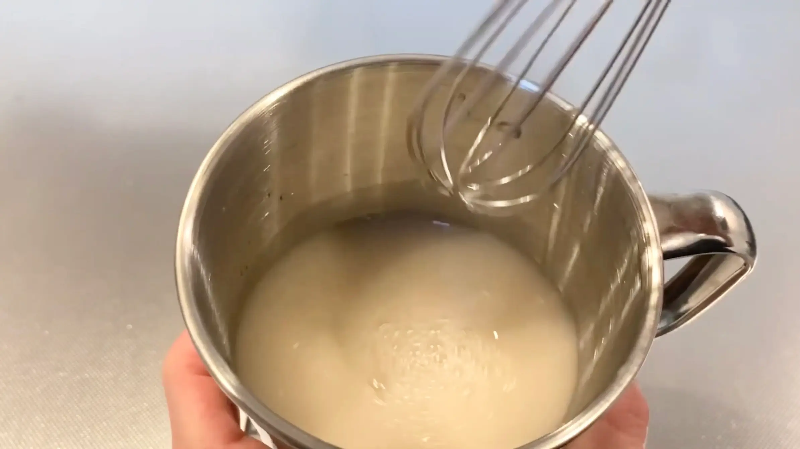
STEP 2
材料をホームベーカリーに入れ6分捏ねる
フランスパンは長めの発酵によってグルテンを作るため、ここでは生地に弾力がつき、粉気がなくなる程度まで混ぜます。
フランスパンは長めの発酵によってグルテンを作るため、ここでは生地に弾力がつき、粉気がなくなる程度まで混ぜます。
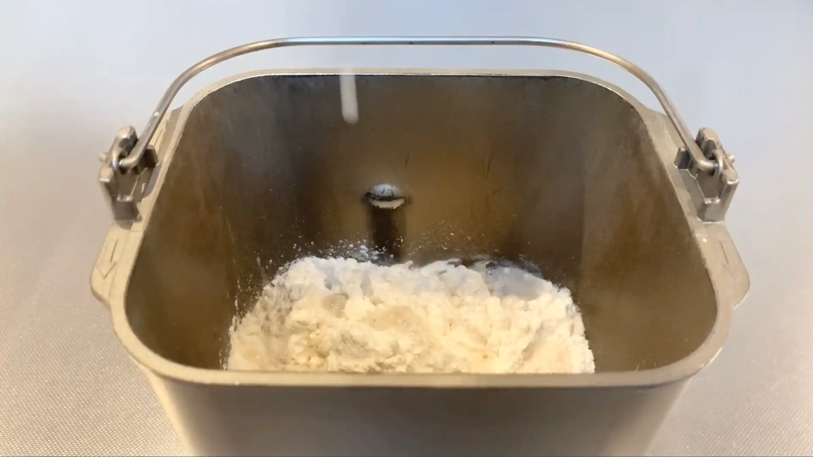
STEP 3
生地を取り出してボウルに入れ、ラップをして常温で40分おく
ここから生地を休ませながら発酵させていきます。最初の発酵では、生地を大きく膨らませるだけでなく、時間をかけて生地に水分をなじませ、グルテンを作っていきます。生地が乾燥しないよう、ラップをしておきます。
ここから生地を休ませながら発酵させていきます。最初の発酵では、生地を大きく膨らませるだけでなく、時間をかけて生地に水分をなじませ、グルテンを作っていきます。生地が乾燥しないよう、ラップをしておきます。
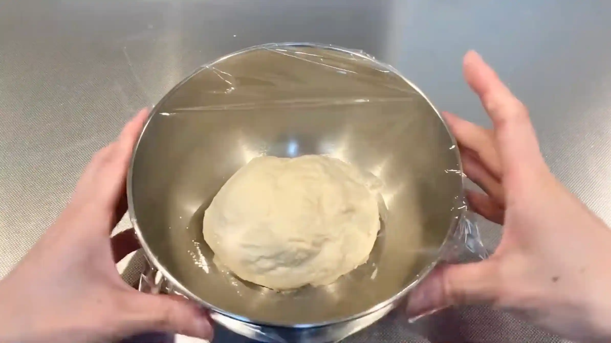
STEP 4
ヘラで生地を外から中央に押し込むように、ボウル1周分ほど混ぜる
生地の外側を中央に折り込むようにして、全体に軽く刺激を与えます。生地の中のガスを整えながら、グルテンのつながりを強くし、生地に適度な弾力をつけます。
生地の外側を中央に折り込むようにして、全体に軽く刺激を与えます。生地の中のガスを整えながら、グルテンのつながりを強くし、生地に適度な弾力をつけます。
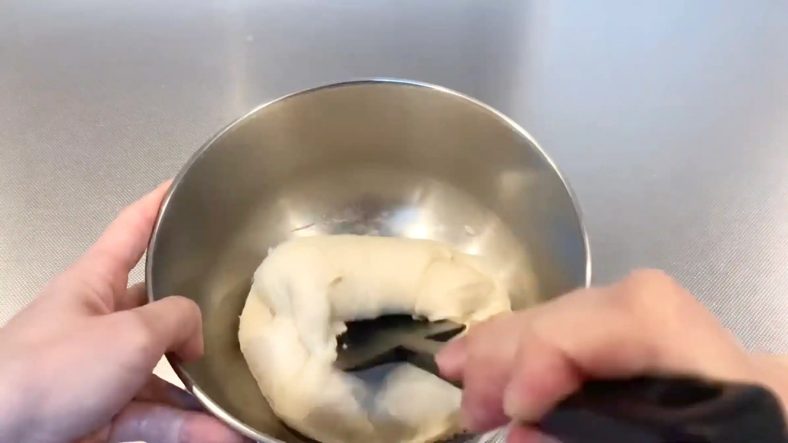
STEP 5
ラップをして、常温で40分おく
再び生地を休ませて発酵を進めます。生地が少しずつ膨らみ、表面にハリが出てくれば順調に発酵しています。
再び生地を休ませて発酵を進めます。生地が少しずつ膨らみ、表面にハリが出てくれば順調に発酵しています。
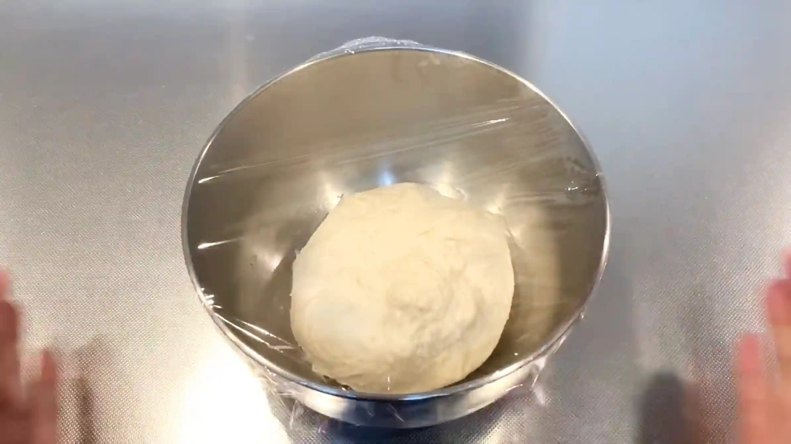
STEP 6
ヘラで生地を外から中央に押し込むように、ボウル1周分ほど混ぜる
STEP4と同じように、生地の外側から中央へ折り込むように軽く混ぜます。生地がベタつく場合は、粉をするのではなく、ヘラを少し水で濡らすと作業しやすくなります。
STEP4と同じように、生地の外側から中央へ折り込むように軽く混ぜます。生地がベタつく場合は、粉をするのではなく、ヘラを少し水で濡らすと作業しやすくなります。
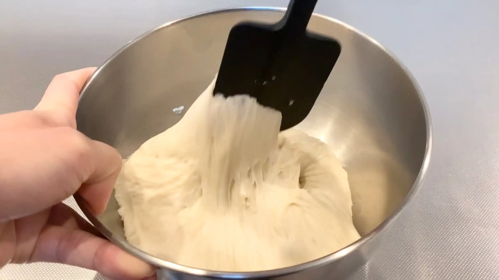
STEP 7
ラップをして、常温で60分おく
最後の発酵を行います。生地がふるふるとした質感になり、ふんわりと膨らんで内部に気泡が感じられるようになれば、次の工程へ進みます。
最後の発酵を行います。生地がふるふるとした質感になり、ふんわりと膨らんで内部に気泡が感じられるようになれば、次の工程へ進みます。
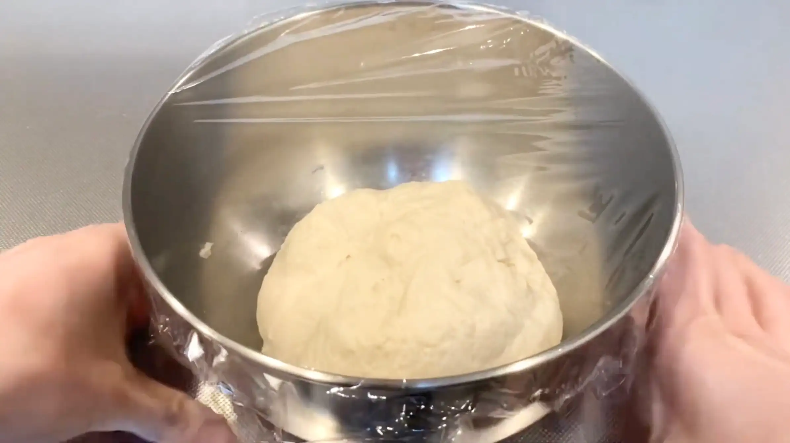
STEP 8
生地に粉を振り、軽くガスを抜いて2分割する
生地がベタつくため、生地や台に粉をふって取り出します。手で生地を軽く抑えガスを抜き、スケッパーなどで2分割します。（私はここからがとても難しかったです。一般的なレシピでは、生地の中にできた大きな気泡を整えるために、ここで軽くガスを抜きます。ただ、ベタつく生地の扱いに慣れていないと手に生地がくっつくため、焦ってどうしても手数が多くなり、意図的にガス抜きをせずともガスが抜けていきます。ですので、まずはなるべく生地に触らないように、分割だけを行うのがおすすめです。）
生地がベタつくため、生地や台に粉をふって取り出します。手で生地を軽く抑えガスを抜き、スケッパーなどで2分割します。（私はここからがとても難しかったです。一般的なレシピでは、生地の中にできた大きな気泡を整えるために、ここで軽くガスを抜きます。ただ、ベタつく生地の扱いに慣れていないと手に生地がくっつくため、焦ってどうしても手数が多くなり、意図的にガス抜きをせずともガスが抜けていきます。ですので、まずはなるべく生地に触らないように、分割だけを行うのがおすすめです。）
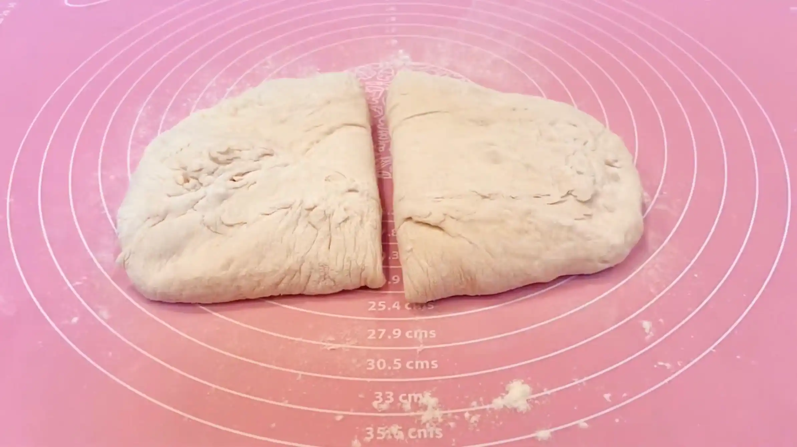
STEP 9
生地の厚さを軽く揃えて、三つ折りする
生地の厚みを揃えて三つ折りすることで、棒状に成形した時太さが均一になり、焼きムラがなく綺麗な仕上がりになります。（ベタつく生地の厚みを揃えるのはとても難しいため、ここも手数が多くなりがちです。生地を触りすぎるとどんどん薄くなり、最終的にはものすごく細いフランスパンになってしまいます。ですので、ここでは軽く厚みを揃える程度にし、三つ折りするのがポイントです。）
生地の厚みを揃えて三つ折りすることで、棒状に成形した時太さが均一になり、焼きムラがなく綺麗な仕上がりになります。（ベタつく生地の厚みを揃えるのはとても難しいため、ここも手数が多くなりがちです。生地を触りすぎるとどんどん薄くなり、最終的にはものすごく細いフランスパンになってしまいます。ですので、ここでは軽く厚みを揃える程度にし、三つ折りするのがポイントです。）
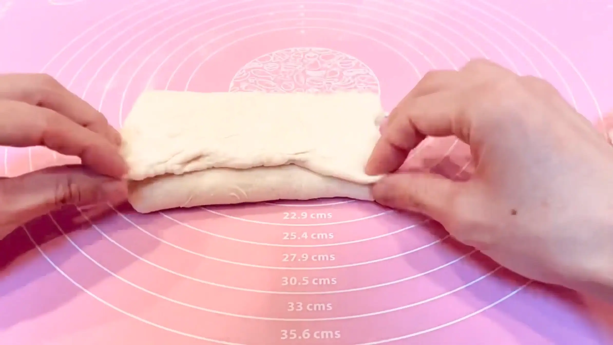
STEP 10
ラップをして、常温で20分おく
ここで休ませることで生地を落ち着かせ、この後の成形で生地を伸ばしやすくなります。
ここで休ませることで生地を落ち着かせ、この後の成形で生地を伸ばしやすくなります。
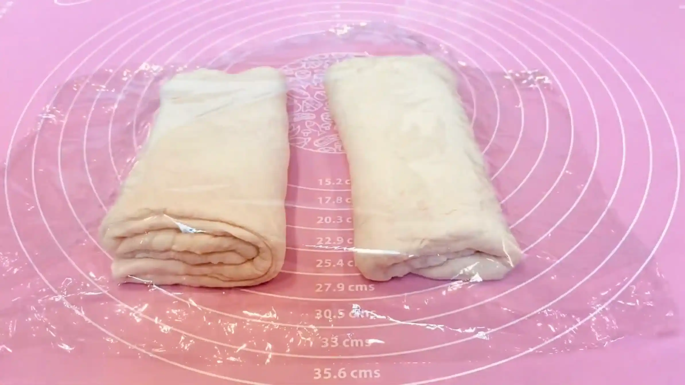
STEP 11
生地を長方形に整える
手のひらを使って長方形に整えます。厚みが均一になると、折りたたんだときに生地が偏りにくく、焼き上がりも整いやすくなります。（画像は生地を薄く伸ばしすぎています。あくまでも「長方形に整える」くらいで進めます。）
手のひらを使って長方形に整えます。厚みが均一になると、折りたたんだときに生地が偏りにくく、焼き上がりも整いやすくなります。（画像は生地を薄く伸ばしすぎています。あくまでも「長方形に整える」くらいで進めます。）
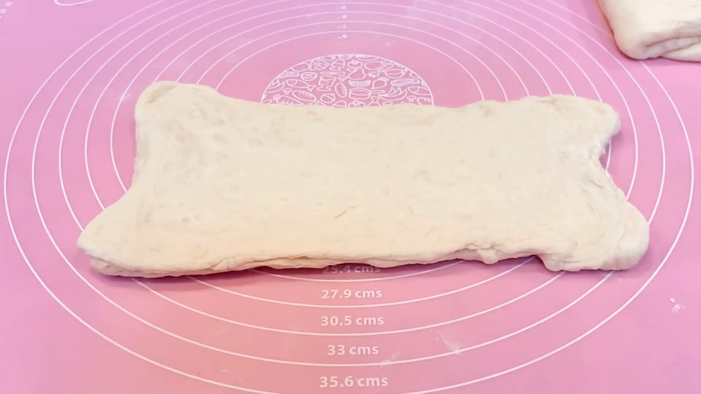
STEP 12
生地の半分を、折りたたむ
長方形に伸ばした生地の半分を折りたたみます。生地の表面を軽く張らせるように折ることで、成形後の生地に適度な張りが生まれます。（この作業も難しいので、まずは丁寧に半分に折りたたむことだけを考えるのがおすすめです。）
長方形に伸ばした生地の半分を折りたたみます。生地の表面を軽く張らせるように折ることで、成形後の生地に適度な張りが生まれます。（この作業も難しいので、まずは丁寧に半分に折りたたむことだけを考えるのがおすすめです。）
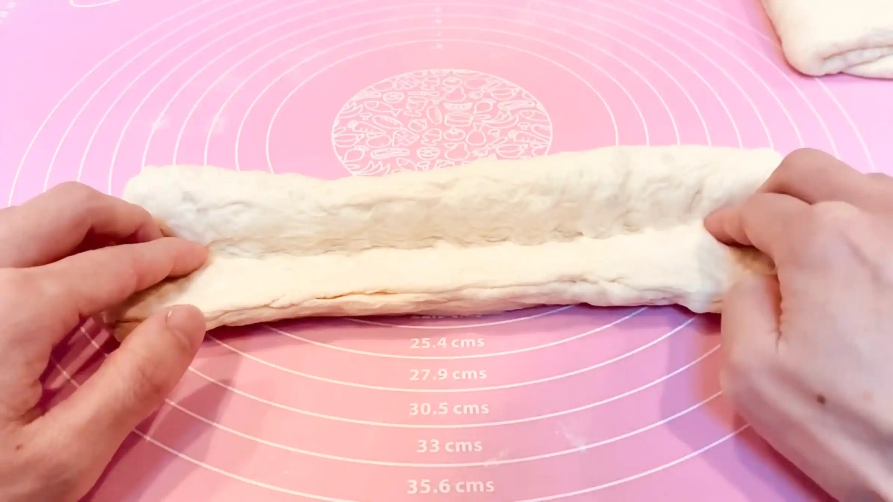
STEP 13
残りの半分を巻き込んで生地を閉じる
残りの生地を折り込むように巻き込み、合わせ目をしっかり閉じます。
残りの生地を折り込むように巻き込み、合わせ目をしっかり閉じます。
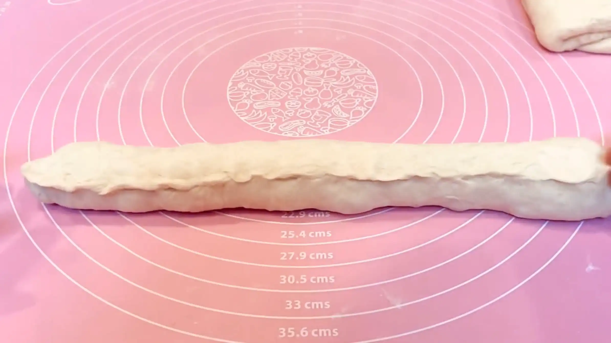
STEP 14
真ん中に指で凹みを作る
成形した生地の中央に指で軽く凹みを作ります。凹みを閉じていくことで、全体の形を整えながら表面に適度な張りをつけやすくなります。
成形した生地の中央に指で軽く凹みを作ります。凹みを閉じていくことで、全体の形を整えながら表面に適度な張りをつけやすくなります。
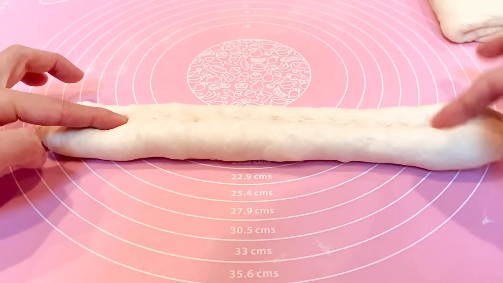
STEP 15
生地を張らすよう、上下の生地で閉じていく
中央の凹みに向かって上下の生地を寄せ、表面を張らせるように閉じていきます。少しずつ生地を張らせながら閉じるのがポイントです。
中央の凹みに向かって上下の生地を寄せ、表面を張らせるように閉じていきます。少しずつ生地を張らせながら閉じるのがポイントです。
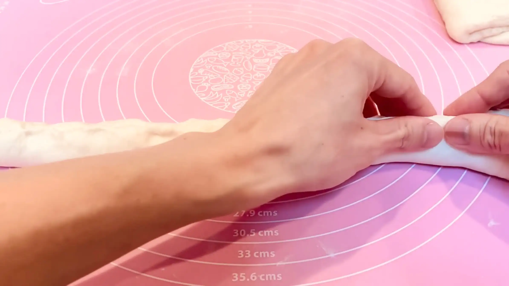
STEP 16
生地をオーブンシートで包み、常温で30分おく
成形した生地をオーブンシートで包み、最終発酵を行います。30分ほど休ませることで生地がゆるみ、焼成時に膨らむためのガスが生地の中に蓄えられます。発酵させすぎると生地の張りがなくなり、焼成時に膨らみにくくなるため注意します。
成形した生地をオーブンシートで包み、最終発酵を行います。30分ほど休ませることで生地がゆるみ、焼成時に膨らむためのガスが生地の中に蓄えられます。発酵させすぎると生地の張りがなくなり、焼成時に膨らみにくくなるため注意します。
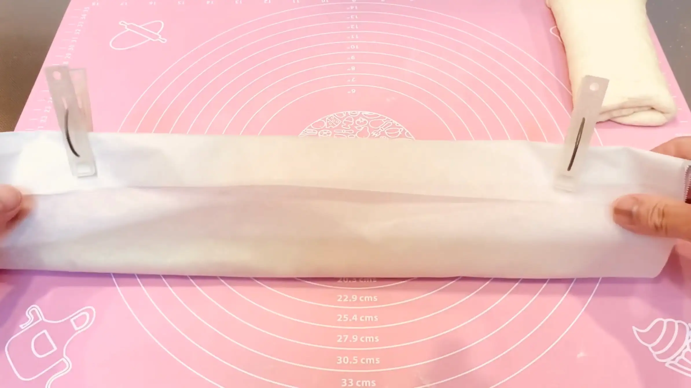
STEP 17
オーブンを210℃で予熱する
生地の発酵が終わる頃に合わせて、オーブンをしっかり予熱しておきます。
生地の発酵が終わる頃に合わせて、オーブンをしっかり予熱しておきます。
STEP 18
刃の角度を40度程にしてクープを入れ、霧吹きをする
クープは刃で表面を薄く削ぐようなイメージで斜めに3本切り込みを入れます。また、霧吹きで表面に水分を与えることで、生地の表面が乾燥するのを抑え、焼成時にクープが開きやすくなります。
クープは刃で表面を薄く削ぐようなイメージで斜めに3本切り込みを入れます。また、霧吹きで表面に水分を与えることで、生地の表面が乾燥するのを抑え、焼成時にクープが開きやすくなります。
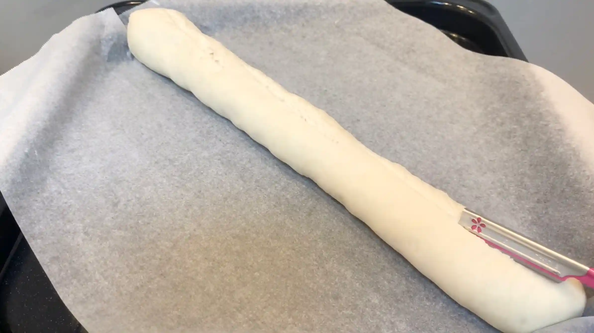
STEP 19
オーブン210℃で25分〜30分焼く
予熱したオーブンで焼き、表面がしっかりと焼き色がつくまで加熱します。焼き時間や温度は目安とし、ご家庭のオーブンによってご調整ください。（ちなみに今回は成形がうまくいかず、ものすごく細長いフランスパンになったため、天板に一度にのせることができず2回に分けて焼きまし。本来は天板のサイズが30㎝程あれば、一度で焼けるかと思います。）
予熱したオーブンで焼き、表面がしっかりと焼き色がつくまで加熱します。焼き時間や温度は目安とし、ご家庭のオーブンによってご調整ください。（ちなみに今回は成形がうまくいかず、ものすごく細長いフランスパンになったため、天板に一度にのせることができず2回に分けて焼きまし。本来は天板のサイズが30㎝程あれば、一度で焼けるかと思います。）
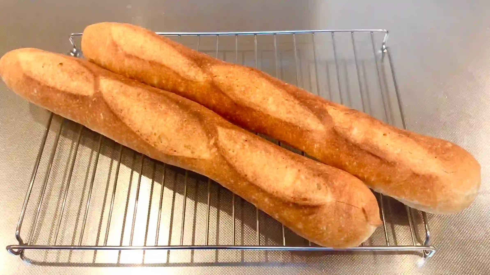
動画でチェック
おいしく作るためのワンポイントコラム
こんにちは、おなおドーナツです！
今回は、特別な道具を使わずに、おうちにあるものだけで『初めてのバゲット』に挑戦してみました！実際に作って検証してみて、分かったことや失敗したポイントを3つにまとめました。
① 家にある粉と砂糖で代用した結果
一般家庭にはない準強力粉やモルトパウダーの代わりに、今回は強力粉8：薄力粉2をブレンドし、モルトパウダーはお砂糖で代用してみました。実際に焼いてみると、特別な材料がなくてもイーストがしっかり働いてくれて、バゲットらしい歯切れの良いバリバリとしたクラスト（皮）が作れることが分かりました。
② 成形の失敗
綺麗な棒状に成形するポイントとして、「最初に生地の厚みを均一にすることで、棒状に成形した時に太さが揃う」とあったので、実際にやってみました。すると、想像以上にベタベタの生地に苦戦し触りすぎてしまったせいで、ものすごく細長い形に仕上がってしまいました。よく「バゲット気泡が大切」と言われていますが、それ以前の問題で、まず初心者はベタベタの生地の扱いになれるのが大切、と感じました。
③ 100均カミソリでのクープ
クープナイフの代わりに、100均のカミソリを使って切れ目を入れてみました。刃の入射角を40度くらいに寝かせて引くことを意識したのですが、刃が短くて1回ではスパッと切れず大苦戦でした。これに関しては、もはや普段使っている包丁の方が切りやすいと思います。専用のクープナイフを買う憧れもありますが、まずは良く切れる刃が深めの刃物で代用してみるのが良いですね。
気泡が全然入らなかったり、エッジが立たなかったりと、不格好になってしまうこともありますが、それも含めてとても楽しいバゲットづくりでした！自分で最後まで丁寧に焼いたバゲットは、目をつぶって食べれば十分すぎるほど美味しい朝ごはんになりました。そして、私もその後少し成長して再度バゲット作り（スーパーの材料でフランスパン）に挑戦しています。こちらもお楽しみいただけると嬉しいです！皆さんもまずは気楽に1本、一緒に挑戦してみませんか？それでは、おうちパン作りの時間を一緒に満喫しましょう！
今回は、特別な道具を使わずに、おうちにあるものだけで『初めてのバゲット』に挑戦してみました！実際に作って検証してみて、分かったことや失敗したポイントを3つにまとめました。
① 家にある粉と砂糖で代用した結果
一般家庭にはない準強力粉やモルトパウダーの代わりに、今回は強力粉8：薄力粉2をブレンドし、モルトパウダーはお砂糖で代用してみました。実際に焼いてみると、特別な材料がなくてもイーストがしっかり働いてくれて、バゲットらしい歯切れの良いバリバリとしたクラスト（皮）が作れることが分かりました。
② 成形の失敗
綺麗な棒状に成形するポイントとして、「最初に生地の厚みを均一にすることで、棒状に成形した時に太さが揃う」とあったので、実際にやってみました。すると、想像以上にベタベタの生地に苦戦し触りすぎてしまったせいで、ものすごく細長い形に仕上がってしまいました。よく「バゲット気泡が大切」と言われていますが、それ以前の問題で、まず初心者はベタベタの生地の扱いになれるのが大切、と感じました。
③ 100均カミソリでのクープ
クープナイフの代わりに、100均のカミソリを使って切れ目を入れてみました。刃の入射角を40度くらいに寝かせて引くことを意識したのですが、刃が短くて1回ではスパッと切れず大苦戦でした。これに関しては、もはや普段使っている包丁の方が切りやすいと思います。専用のクープナイフを買う憧れもありますが、まずは良く切れる刃が深めの刃物で代用してみるのが良いですね。
気泡が全然入らなかったり、エッジが立たなかったりと、不格好になってしまうこともありますが、それも含めてとても楽しいバゲットづくりでした！自分で最後まで丁寧に焼いたバゲットは、目をつぶって食べれば十分すぎるほど美味しい朝ごはんになりました。そして、私もその後少し成長して再度バゲット作り（スーパーの材料でフランスパン）に挑戦しています。こちらもお楽しみいただけると嬉しいです！皆さんもまずは気楽に1本、一緒に挑戦してみませんか？それでは、おうちパン作りの時間を一緒に満喫しましょう！


今回は専用の道具や珍しい材料を一切使わずに、おうちにあるものだけで私が実際に挑戦した「初めてのバゲット」をご紹介します！ハードルが高そうなバゲットを、ド素人の初心者目線で作ってみた記録です。
コラムでは「家にある粉と砂糖で代用した結果」「成形の工夫」「100均カミソリでのクープ」の3つのポイントをご紹介します。